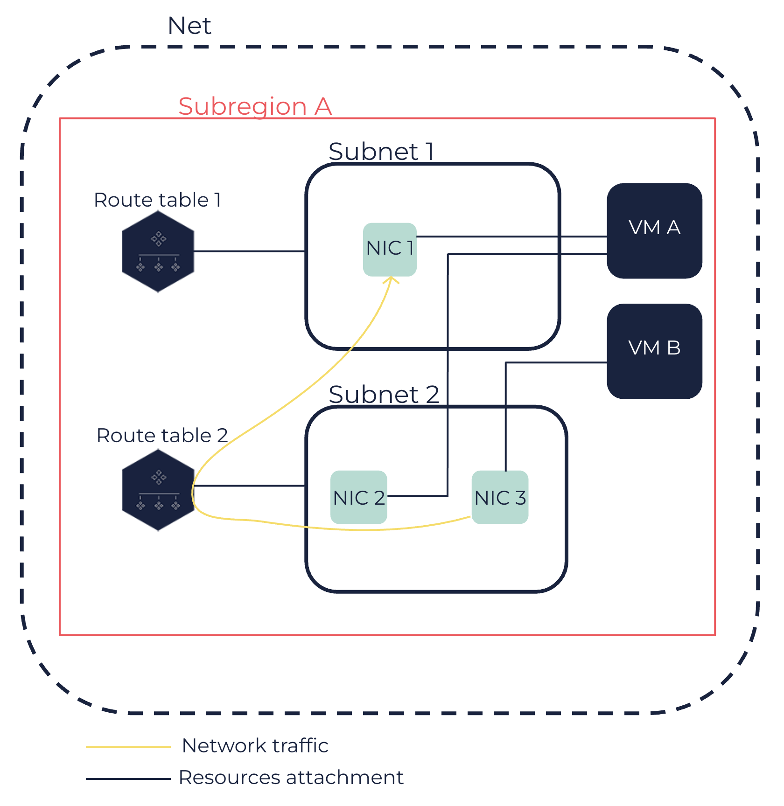

About NICs
Flexible network interfaces (FNIs) are additional virtual network interfaces that you can attach to virtual machines (VMs) in a Net. They act as virtual network cards that enable you to partition your network and to redirect the network traffic to another VM, as they can be detached and attached to another VM at any time.
NICs have one or more private IPs assigned, and optionally a public IP.
Primary Network Interface and NICs
VMs are created with a default network interface, to which a private IP is assigned. This network interface is called the primary network interface and cannot be detached from the VM. The IPs assigned to a VM are actually assigned to this primary network interface.
You can create additional network interfaces that you can attach to and detach from VMs in a Net at any time. These additional network interfaces are called network interface cards (NICs). NICs enable VMs to be connected to several networks and to partition the VM network. This may be required for security issues if you want to use, for example, different networks for different roles within your organization, or different services for different customers.
|
NICs do not increase the VM network bandwidth. |
The maximum number of NICs that you can attach to a VM depends on the VM type. For more information, see VM Types.
NICs Attributes
A NIC includes the following attributes:
-
An ID in the
eni-XXXXXXformat that is automatically assigned to the NIC when it is created. -
(optional) A description.
-
A primary private IP, automatically assigned by the DHCP server or that you can manually define.
-
(optional) One or more secondary private IPs. Adding several private IPs partitions the VM network. This also enables you to have multiple IPs for a VM. For more information, see Assigning Secondary Private IPs to a NIC.
All private IPs (primary and secondary) assigned to a NIC must be in the IP range of the Subnet of the NIC.
-
(optional) A public IP, through the use of a public IP attached to the NIC. For more information, see Linking a Public IP with a VM or a Network Interface.
By default, VMs in a Net do not have access to and cannot be accessed from the internet. To enable access to and from the internet, you need to attach a public IP to the VM (primary network interface) or to a NIC, a route table to the Subnet where the VM or the NIC is, and an internet service to the Net. The internet traffic goes from the NIC to the internet through the corresponding routing table and the internet service. For more information, see Nets.
-
One or more security groups associated with the NIC. As the IPs assigned to a VM are in reality assigned to its primary network interface, the behavior of the security groups is the same for VMs and for NICs. For more information, see Security Groups.
-
A Media Access Control (MAC) address to physically identify the NIC.
-
(optional) A source/destination check flag, to send or receive traffic on behalf of another VM.
A private DNS name associated with the primary private IP is assigned to the NIC. If you assign one or more secondary private IPs, a private DNS name associated with each one of them is also assigned to the NIC. However, the private DNS name used and returned by default is the private DNS name associated with the primary private IP. If you attach a public IP to a NIC, the public DNS name associated with it is also assigned to this NIC.
NICs Attachment to VMs
You can attach or detach a NIC from a VM at any time, regardless of the state of the VM. For more information, see Attaching a NIC to a VM and Detaching a NIC from a VM.
You can also create and attach NICs to a VM at creation. For more information, see Creating VMs.
|
If you want to attach more than one NIC to a VM, a network interface configuration may be required depending on the chosen operating system (OS). This includes IP addressing and routing. You can configure the network interface directly on the OS level in the VM. |
An attachment ID in the eni-attach-XXXXXXXX format is assigned to the NIC each time you attach it to a VM. When you attach a NIC to a VM, you also need to specify a device index for the attachment between 1 and 7 (both included). Device index 0 is reserved for the primary network interface of the VM.
The attributes of a NIC remain when the NIC is detached and attached to another VM. When you attach a NIC to another VM, the traffic related to this NIC is automatically redirected to this VM. An NIC can only be attached to one VM at a time.
By default, when VMs with attached NICs are terminated, the NICs created with the VMs are deleted, while the NICs created after the creation of the VMs are detached.
While Nets are available for a Region, NICs are created in a Subnet and are available for the Subregion of this Subnet only. Therefore, you can attach NICs only to VMs placed in Subnets within this Subregion.
|
The following schema shows:
-
A VM A with two NICs (FNI 1 and NIC 2) placed in Subnet 1 and Subnet 2, belonging to the same Subregion.
-
A VM B with one NIC (FNI 3) placed in Subnet 2.
-
The way traffic is routed from NIC 3 to NIC 1 using the route table 2 associated with Subnet 2.

|
A NIC can be in one of the following states:
-
available: The NIC is created and available to be attached to a VM. -
attaching: The attachment process of the NIC to a VM is in progress. -
in-use: The NIC is attached to a VM, and can send and receive network traffic. -
detaching: The detachment process of the NIC from a VM is in progress.
Additionally, a NIC can be in one of the following attachment states:
-
attaching: The attachment process of the NIC to the specified VM is in progress. -
attached: The attachment process of the NIC to the specified VM is finished. -
detaching: The detachment process of the NIC from the specified VM is in progress. -
detached: The detachment process of the NIC from the specified VM is finished.
Related Pages